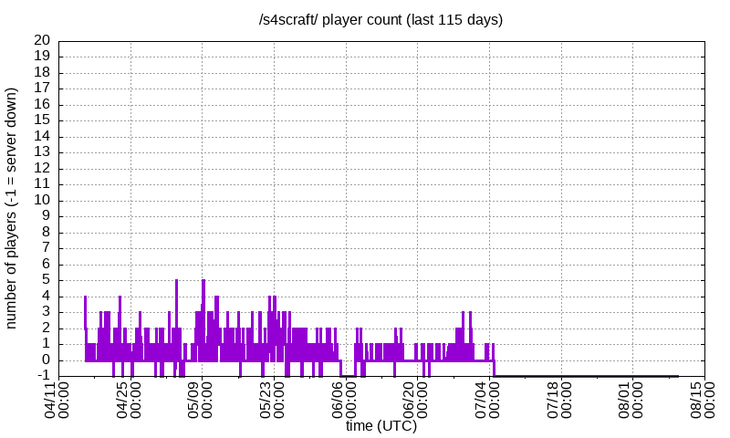

Le [s4s] minecraf survival serbur for [s4s] nicers.
Java 1.20.2 and Bedrock (via GeyserMC on port 25565)
Latest news: >>>/s4s/s4scraft
Rules
Features
Pictured, west side of the spawn landmass, where the mickers live!
Server render distance is ~11 chunks (prolly), turn it waaaaaaay up with the Bobby mod and watch ur PC explohd at incredible hihg speed!!!


Server online since Feburary 2024, all times UTC.
Last updated 2024-08-09 15:13:44+00:00, statistics refreshed every 10 minutes, unless GitHub Actions throttles me again cus I don't wanna pay for a VPS.

Rank, username, times spotted, date last spotted
1 Kreseph 693 1mo ago
2 Claybacon 370 2mo ago
3 stpeam 352 1mo ago
4 Kiyyun 276 1mo ago
5 Voyes 231 2mo ago
6 snooozanoom 180 2mo ago
7 kennor14 155 1mo ago
8 nicefig 130 1mo ago
9 684 111 2mo ago
10 G33KO 95 1mo ago
11 D3F4L7_ 51 3mo ago
12 saLT_Juicy 42 2mo ago
13 GIANT_CRAB 42 2mo ago
14 Lampara204 41 3mo ago
15 sunfishywow 36 3mo ago
16 Pizza_Joe 31 2mo ago
17 born2late 29 1mo ago
18 JeffreyEpstein 24 3mo ago
19 __victim__ 23 1mo ago
20 riricky77 22 3mo ago
21 Mintiplite 21 2mo ago
22 125scratch 21 1mo ago
23 Galantro985 19 2mo ago
24 DookieDookster 19 2mo ago
25 rqmzi 16 1mo ago
26 duders_ 13 1mo ago
27 boschel 13 2mo ago
28 JNakz64 12 3mo ago
29 Hollowgraph 11 2mo ago
30 Asukaism 11 1mo ago
31 ironyhater 10 1mo ago
32 12DAMDO 9 3mo ago
33 sykosami 8 1mo ago
34 marquitos3p 8 2mo ago
35 ilker__ 8 3mo ago
36 iBeatWomen2Death 8 3mo ago
37 NoName2820 8 2mo ago
38 Neurotoxin101 8 3mo ago
39 Ethanyes 8 3mo ago
40 BaconLover07 8 2mo ago
41 Tightt 7 2mo ago
42 skovmoj 6 1mo ago
43 AvidNihilist 6 2mo ago
44 xwxw 5 2mo ago
45 podracinglol 5 3mo ago
46 foxxboii 5 3mo ago
47 SedansCans 5 3mo ago
48 revega 4 3mo ago
49 nezanyat 4 1mo ago
50 idk1208 4 3mo ago
51 Zeroda 4 3mo ago
52 GUNKYSHOOTER 4 3mo ago
53 CunniBandit 4 3mo ago
54 2j0 4 3mo ago
55 rzouga 3 2mo ago
56 lain098576908576 3 2mo ago
57 khaowai 3 1mo ago
58 ironjayy 3 2mo ago
59 doopeers 3 3mo ago
60 SpaceMarineGamin 3 3mo ago
61 King2s 3 2mo ago
62 Houison1 3 3mo ago
63 qin_wong 2 1mo ago
64 niceposter765 2 3mo ago
65 job1488 2 3mo ago
66 UwU_r 2 3mo ago
67 TsukiStuffs 2 2mo ago
68 TheVoidLord101 2 3mo ago
69 Pancho327 2 2mo ago
70 Nastja3 2 1mo ago
71 Jesterrr_ 2 3mo ago
72 soda 1 3mo ago
73 moorat 1 3mo ago
74 enslavecatgirls 1 2mo ago
75 corm 1 2mo ago
76 Zielony898 1 3mo ago
77 Mich900 1 3mo ago
78 MadokaMagic 1 3mo ago
79 Macavitycode 1 3mo ago
80 FearBag 1 2mo ago
81 0842DC37B8E88DRW 1 1mo ago
Made with Free Software™, view source code for this page.